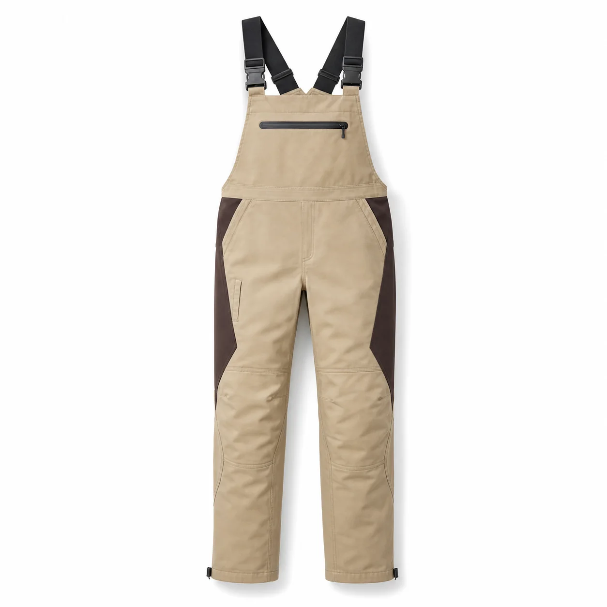

Bej Kahverengi Panelli Bahçıvan Tulumu
Bej ana kumaşı, kahverengi yan panelleri, yatay fermuarlı göğüs cebi ve düşük hacimli cep düzeniyle servis ve saha ekipleri için planlanan modern bahçıvan tulumudur.

Bej Kahverengi Panelli Bahçıvan Tulumu üretim ayrıntıları
Bej Kahverengi Panelli Bahçıvan Tulumu, kurumsal ekiplerde görev işlevi ve düzenli görünümü bir araya getirmek üzere planlanan İş tulumları modellerindendir. Bej | Kahverengi yan paneller | Fermuarlı göğüs cebi | Ton sür ton diz formu | Ayarlanabilir askı özellikleri modelin temel çerçevesini oluşturur.
Malzeme seçimi teknik dokuma kumaş üzerinden; çalışma ortamı, vardiya süresi, hareket ve bakım düzeni dikkate alınarak yapılır. Dikiş, cep ve kapama noktaları numunede kontrol edilir.
Logo ölçüsü ve konumu kumaş yüzeyiyle birlikte değerlendirilir. Onaylanan nakış veya baskı uygulaması model koduna bağlanarak tekrar sipariş standardı korunur.
Adet, beden dağılımı, renk, teslimat noktası ve hedef tarih yazılı paylaşıldığında kumaş ve üretim planı netleştirilir. Seri üretim yalnız onaylanan kapsam üzerinden ilerler.
Model özellikleri
- Bej
- Kahverengi yan paneller
- Fermuarlı göğüs cebi
- Ton sür ton diz formu
- Ayarlanabilir askı
Benzer ürünler
Saks Mavi Reflektörlü Bahçıvan Tulumu
KT-TL-015 kodlu kurumsal üretim modelini inceleyin.
Ürün detayına gidin →Antrasit Saks Panelli Bahçıvan Tulumu
KT-TL-020 kodlu kurumsal üretim modelini inceleyin.
Ürün detayına gidin →Lacivert Fosfor Panelli Reflektörlü Bahçıvan Tulumu
KT-TL-021 kodlu kurumsal üretim modelini inceleyin.
Ürün detayına gidin →İlgili seçim ve bakım rehberleri
İş Tulumu Seçim Rehberi
Kullanım, seçim ve bakım ayrıntılarını inceleyin.
Rehbere gidin →İş Tulumunda Gövde Boyu ve Ağ Derinliği Nasıl Belirlenir?
Kullanım, seçim ve bakım ayrıntılarını inceleyin.
Rehbere gidin →İş Kıyafetlerinde Dikiş Türleri ve Kullanım Alanları
Kullanım, seçim ve bakım ayrıntılarını inceleyin.
Rehbere gidin →Sık sorulan sorular
Minimum sipariş kaç adettir?
Bu modelde özel üretim minimum siparişi 50 adettir.
Logo uygulanabilir mi?
Kumaşa göre nakış, DTF, transfer veya serigrafi uygulanabilir.
Farklı renk üretilebilir mi?
Kumaş ve aksesuar uygunluğuna göre kurumsal renk planlanabilir.
Numune hazırlanabilir mi?
Proje kapsamına göre seri üretim öncesinde numune hazırlanabilir.
Beden dağılımı nasıl belirlenir?
Çalışan listesi ve numune kontrolüyle beden dağılımı yazılı onaya alınır.
Teklif için ne gerekir?
Adet, beden, renk, logo, teslimat şehri ve hedef tarih paylaşılmalıdır.
KT-TL-019 için teklif alın.
Ürün, adet, beden ve logo bilgilerinizi paylaşın.